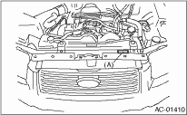
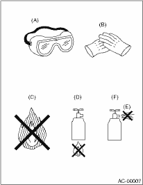
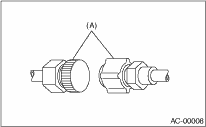
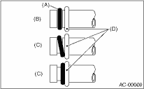
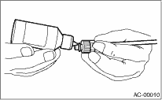

HVAC SYSTEM (HEATER, VENTILATOR AND A/C) > General Description
• The cooling system components for the HFC-134a system such as the refrigerant and compressor oil are different from the conventional CFC-12 system components and they are incompatible with each other.
• Vehicles with the HFC-134a system can be identified by the label (A) attached to the vehicle.
Before maintenance, check which A/C system is installed to the vehicle.

• HFC-134a compressor oil has no compatibility with that of CFC-12 system.
• Use only the manufacturer-authorized compressor oil for the HFC-134a system; only use ZXL200PG.
• Do not mix multiple compressor oils.
If CFC-12 compressor oil is used in the HFC-134a A/C system, the compressor may become stuck due to poor lubrication, or the refrigerant may leak due to swelling of rubber parts.
On the other hand, if HFC-134a compressor oil is used in a CFC-12 A/C system, the durability of the A/C system will be lowered.
• HFC-134a compressor oil is very hygroscopic. When replacing or installing/removing A/C parts, immediately isolate the oil from atmosphere using a plug or tape. In order to avoid moisture, store the oil in a container with its cap tightly closed.
• CFC-12 refrigerant cannot be used in a HFC-134a A/C system. HFC-134a refrigerant, also cannot be used in a CFC-12 A/C system.
• If an incorrect or no refrigerant is used, it will result in poor lubrication and the compressor itself may be damaged.
• The refrigerant boils at approx. −30°C (−22°F). When handling it, be sure to wear protective goggles and protective gloves. Direct contact of the refrigerant with skin may cause frostbite.
If the refrigerant gets into your eye, avoid rubbing your eyes with your hands. Wash your eye with plenty of water, and receive medical treatment from an eye doctor.
• Do not heat a service can. If a service can is directly heated, or put into boiling water, the inside pressure will become extremely high. This may cause the can to explode. If a service can must be warmed up, use hot water at 40°C (104°F) or less.
• Do not drop or impact a service can. (Observe the precautions and operation procedure described on the refrigerant can.)
• When the engine is running, do not open the high-pressure valve of manifold gauge. The high-pressure gas will back-flow resulting in an explosion of the can.
• Provide good ventilation and do not work in a closed area.
• In order to prevent global warming, avoid releasing HFC-134a into the atmosphere. Using a refrigerant recovery system, discharge and recycle the gas.

|
(A) |
Goggles |
|
(B) |
Gloves |
|
(C) |
Avoid open flame |
|
(D) |
No direct heat on container |
|
(E) |
Do not discharge |
|
(F) |
Loosen |
• Always use a new O-ring.
• In order to keep the O-rings free of lint which will cause a refrigerant gas leak, perform work without using gloves or waste cloths.
• Apply compressor oil to O-rings to avoid sticking, before installation.
• Use a torque wrench to tighten the O-ring fittings. Over-tightening will result in damage of the O-ring and deformation of the tube end.
• If the operation is interrupted before completing a pipe connection; recap the tubes, components and fittings with a plug or tape to prevent dirt from entering.

|
(A) |
Seal |
• Visually check the surfaces and mating surfaces of O-rings, threads and connecting points. If a failure is found, replace the applicable parts.
• Install the O-rings straight against the groove of the tube.

|
(A) |
O-ring |
|
(B) |
OK |
|
(C) |
NG |
|
(D) |
Bead |
• Use oil specified in the service manual to lubricate the O-rings.
Apply oil to the top and sides of O-rings before installation.
Apply the oil to the O-ring and end of the tube.

• After tightening, use a clean cloth to remove the excess oil from the connections and any oil which may have run on the vehicle body or other parts.
• If any leakage is suspected after tightening, do not further tighten the connections, but disconnect the connections, remove the O-rings, and check the O-rings, threads, and connections.